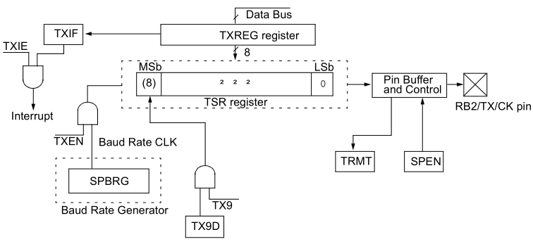
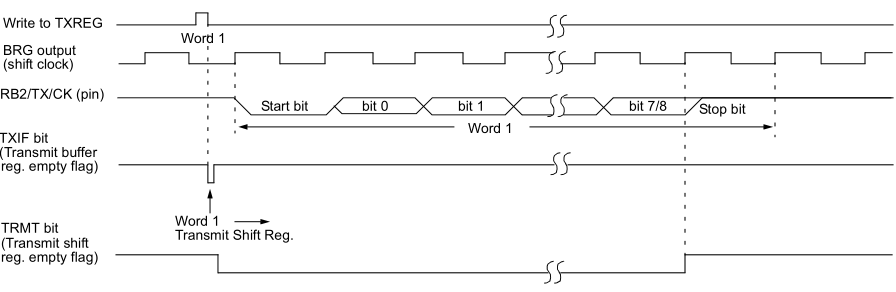
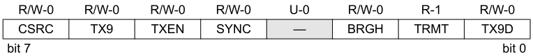
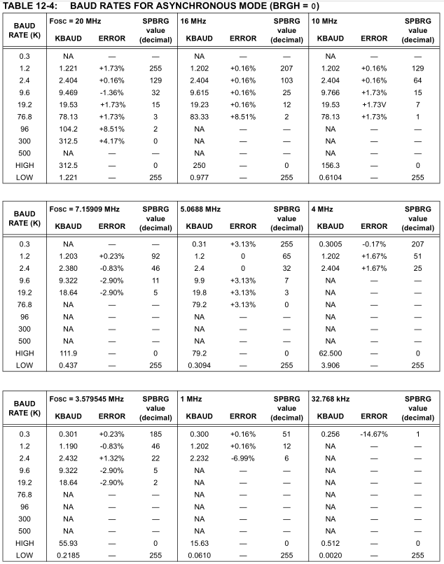
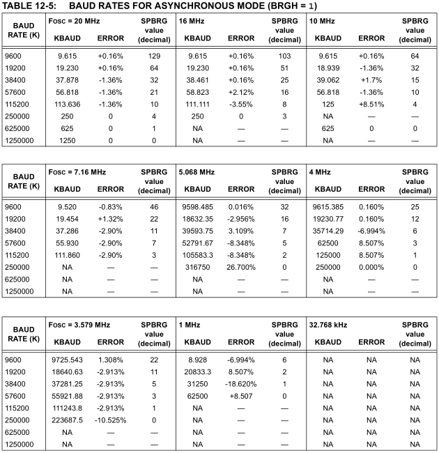

Episódio 23: Conhecendo o módulo USART - Transmissão assíncrona e a interrupção associada
Neste episódio conheceremos o modulo USART (Universal Synchronous Asynchronous Receiver Transmitter) e trabalharemos especificamente neste episódio no modo de transmissão assincrona.
O modulo USART é muito importante para trablhar com dispositivos como modulos GSM, GPS, IHM, computadores, entre outros, e utilizam desse meio de comunucação para trocas de dados.
Conforme a Figura 23.1 exibe o diagrama de transmissão por USART no qual pode-se ver os elementos que o compoem, enquanto que a Figura 23.2 vê-se o processo de envio da informação.
| Figura 23.1 - Diagrama de de transmissão do modulo USART |
|---|
|  |
| Fonte: xxxxx |
| Figura 23.2 - Transmissão assincrona do modulo USART |
|---|
|  |
| Fonte: xxxxx |
O primeiro registrador usado no processo de transmissão de dados por USART é o registrador TXSTA (Transmit Status and Control Register) visto na Figura 23.3.
| Figura 23.3 - Registrador TXSTA |
|---|
|  |
| Fonte: xxxxx |
O bit CSRC é o bit responsavel pela seleção do clock do processo, no qual não é aplicado para modo assincrono [COLOCAR AQUI O MOTIVO] usado neste episodio. Se houver uso no modo sincrono, se CSRC for igual a 1, o clock será gerado internamente pelo BRG (USART Baud Rate Generator) no modo Master, mas se CSRC for igual a 0 o clock gerado é externo e modo é Slave.
Já o bit TX9 é responsavel por ativar ou não o envio do nono (9º) bit. Assim se TX9 for igual a 1, o 9º bit é que é o bit TX9D do registrador TXSTA é enviado, já se TX9 for igual a 0 são enviados apenas os 8 bits do registrador TXREG (registrador que armazenado os dados a ser enviados).
O bit TXEN é o bit responsavel pela transmissao, pois quando TXEN é igual a 1 a transmissaõ está ativa, enquanto TXEN for igual a 0 a transmissão está desativada.
O bit SYNC é o bit de seleção de modo do modulo USART usado, onde SYNC é igual a 1 para uso no modo sincrono ou igual a 0 no modo assincrono.(utilizado neste episodio).
O bit BRGH é o bit da seleção de taxa “baud” alta, onde esse bit é aplicado somente no modo assincrono. Se esse bit for igual a 1 a taxa será alta, e 0 caso o contrario. Veremos o uso dele posteriormente.
O bit TRMT é o bit de status associado ao registrador TSR (registrador de dados a ser enviados). Se esse bit é 0 o registrador TSR está cheio e se TRMT é igual a 1 o registrador está vazio.
Outro importante registrador é o registrador SPBRG que é o registrador gerador de taxa de “baud” e o valor dele é dado pelas três situações a seguir:
Baud rate = Fosc / (64 * (SPBRG + 1))
Baud rate = Fosc / (16 * (SPBRG + 1))
Baud rate = Fosc / (4 * (SPBRG + 1))
onde 0 ≤ SPBRG ≤ 255.
Vejamos o exemplo para uma comunicação (transmissão) USART de 9600 bps com bit de seleção de baud rate baixo e frequencia oscilação de 16 MHz. Assim, o valor do registrador SPBRG e o erro cometido é:
Baud rate = Fosc / (64 * (SPBRG + 1)) 9600 = (16 * 10^6) / (64 * (SPBRG + 1)) SPBRG + 1 = (16 * 10^6) / (64 * 9600) SPBRG + 1 = (16 * 10^6) / (64 * 9600) - 1 SPBRG = 25,0416...
Assim, se SPBRG = 25
Baud rate = Fosc / (64 * (SPBRG + 1))
Baud rate = (16 * 10^6)/ (64 * (25 + 1))
Baud rate = 9615,384615
Baud rate ≈ 9615
Logo o erro é calculado como
erro = (valor calculado - valor desejado) / valor desejado erro = (9615 - 9600) / 9600 erro = 15 / 9600 erro = 0,0015625 erro ≡ 0,16 %
Agora, se SPBRG = 26
Baud rate = Fosc / (64 * (SPBRG + 1))
Baud rate = (16 * 10^6)/ (64 * (26 + 1))
Baud rate = 9259,259...
Baud rate ≈ 9259
Logo o erro é calculado como
erro = (valor calculado - valor desejado) / valor desejado erro = (9259 - 9600) / 9600 erro = -341 / 9600 erro = -0,035520833 erro ≡ -3,5520833 %
Portanto, o menor erro ocorre para SPBRG = 25 como se observar pelos calculos.
IMPORTANTE:Quando se escreve um novo valor no registrador SPBRG, esse processo provoca o reset (limpa) do timer BRG.
As Tabelas X1 e X2 que mostram exemplos de valores calculados de SPBRG para algumas frequencias
| Figura/Tabela X1 23.3 - Modo assincrono para baixa velocidade |
|---|
|  |
| Fonte: xxxxx |
| Figura/Tabela X1 23.3 - Modo assincrono para alta velocidade |
|---|
|  |
| Fonte: xxxxx |
Assim, conforme seção 12,2 (USART Asynchronous Mode) os passos para transmissão no modo assincrono são:
Exemplo: Envio de estados de botões pressionados
Colocar o exemplo aqui